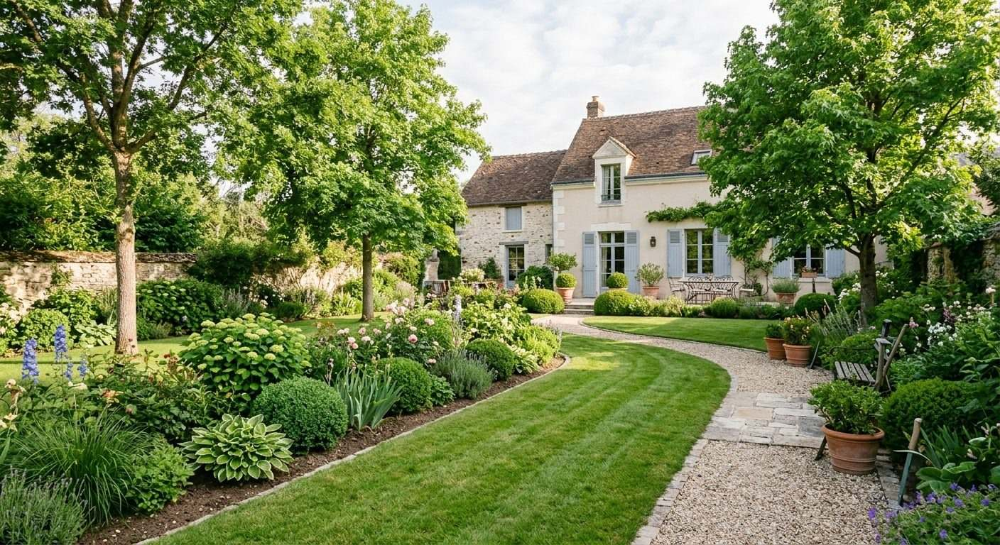
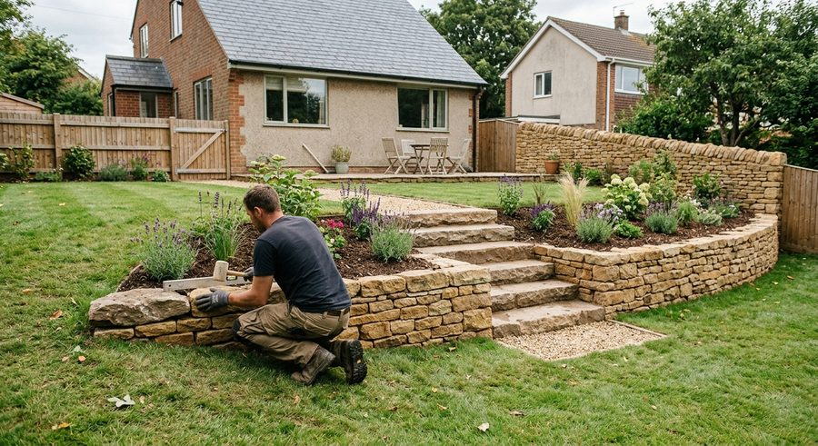

Aménagement paysager
Conception de jardin, plantation de massifs, décoration paysagère, abattage et taille des arbres.
- Conception
- Massifs
- Abattage
Paysagiste en Essonne
Atmosphère Paysage aménage et entretient les jardins des particuliers, des professionnels et des collectivités. Nous venons chez vous, faisons l’état des lieux, puis établissons un devis gratuit.

Nos savoir-faire
De la conception de votre jardin à sa pose finale, une équipe unique prend en charge les végétaux comme les ouvrages en bois, en pierre et en métal.
Conception de jardin, plantation de massifs, décoration paysagère, abattage et taille des arbres.

Tonte, traitement et regarnissage de pelouse, élagage, arrosage automatique et récupération d’eau de pluie.

Terrasses, pontons, pergolas et carports en bois, posés sur mesure dans votre jardin.

Murets de jardin, bassins d’agrément et pavage de vos allées.
Pose de vos portails et portillons, clôtures et barrières de jardin.
Notre méthode
Nous nous rendons chez vous pour faire l’état des lieux de votre jardin.
Nous vous conseillons dans la réalisation de votre projet, selon vos attentes.
Vous recevez un devis détaillé, sans frais, avant le début des travaux.
Nous réalisons les travaux, puis proposons un contrat d’entretien renouvelable chaque année.
Zone d’intervention
Décrivez-nous votre projet : nous vous répondons et nous nous déplaçons pour un devis gratuit.